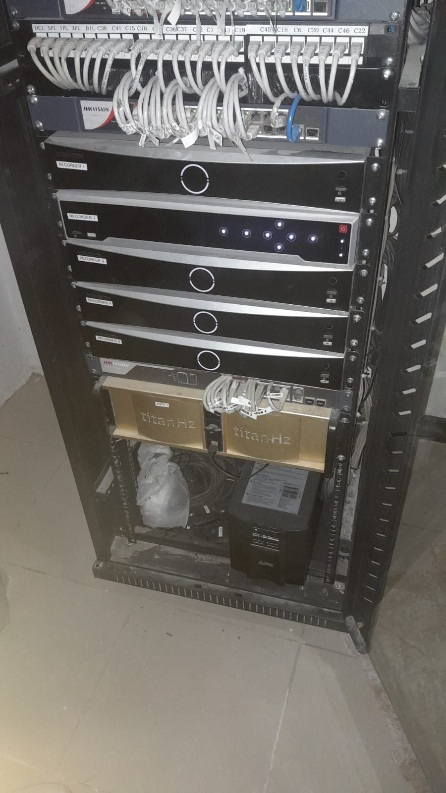
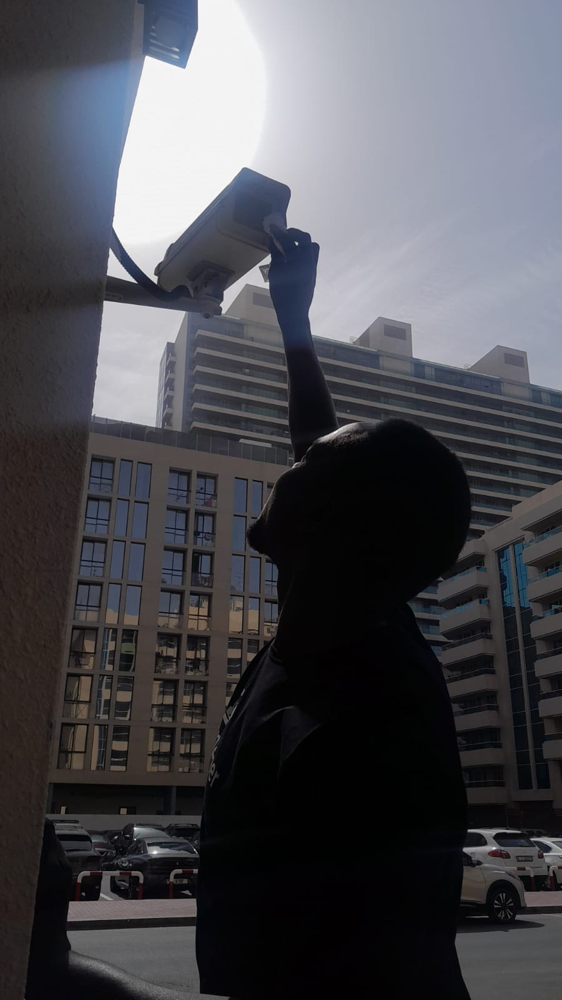
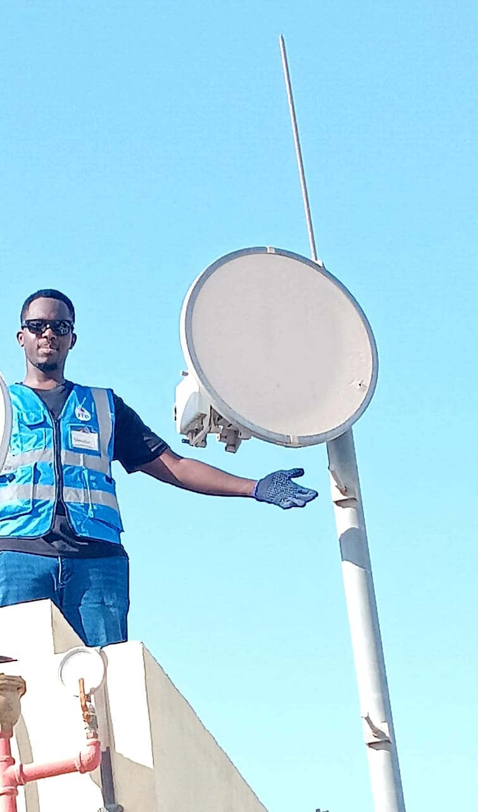
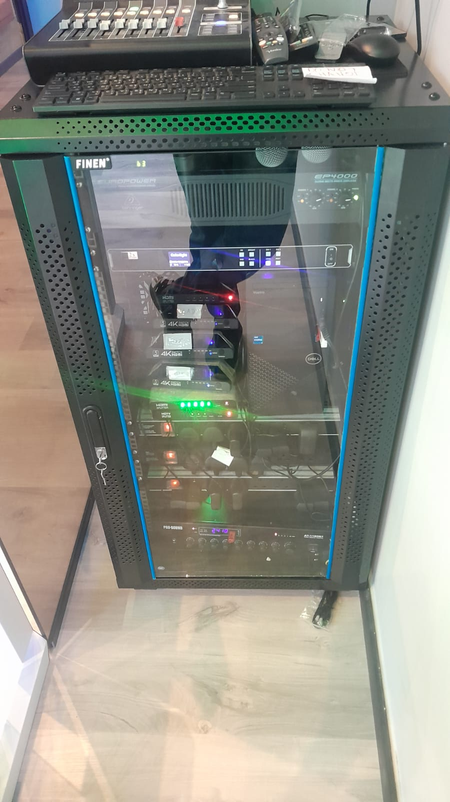
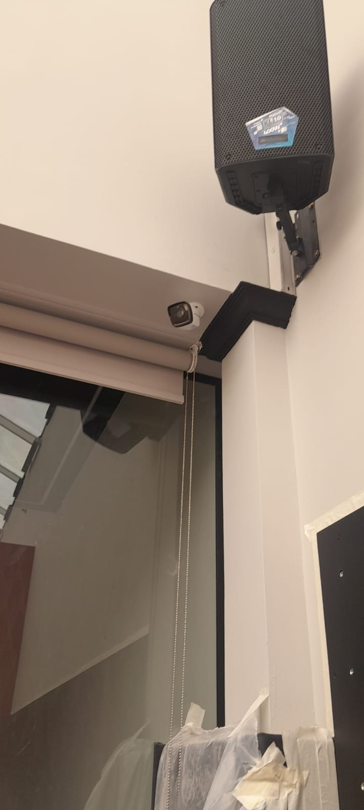
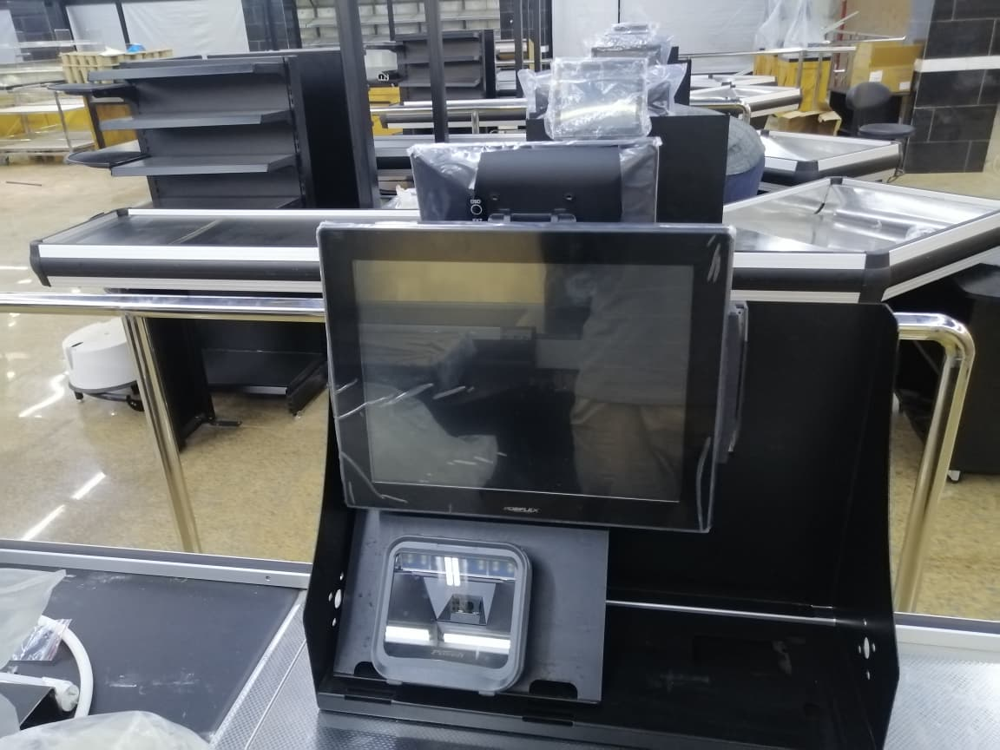
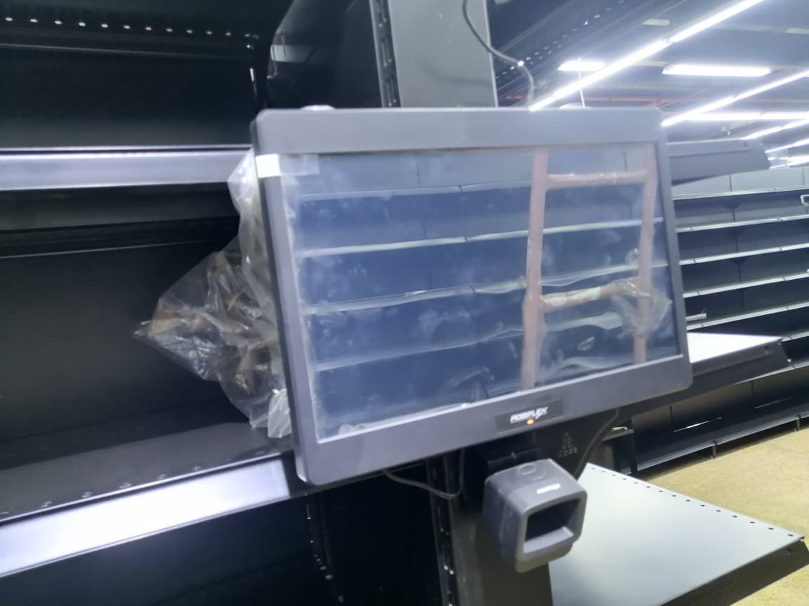
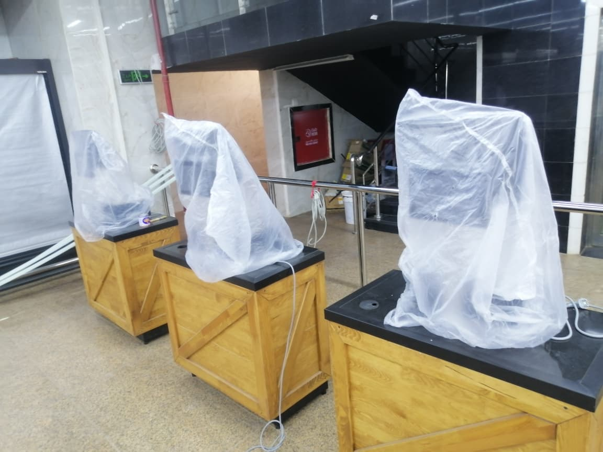

Microsoft 365 Administration
Tenant administration, Exchange Online, mailbox recovery, mail flow troubleshooting, licensing and security hardening.
Hi, I'm
Highly versatile IT Officer and Network Specialist with over 6 years of progressive experience across comprehensive IT system administration, Microsoft 365 & Cloud solutions, and Extra Low Voltage (ELV) systems. Based in Abu Dhabi, focused on operational continuity across systems and networks, robust IT security policy enforcement, and Active Directory & backup management.
Highly versatile IT Officer and Network Specialist with over 6 years of progressive experience, specializing in comprehensive IT system administration, Microsoft 365 & Cloud solutions, and the implementation of Extra Low Voltage (ELV) systems. Currently based in Abu Dhabi, my role focuses on ensuring operational continuity across systems and networks, enforcing robust IT security policies, and managing Active Directory and backup solutions.
I have a proven record of success in designing, configuring, and executing large-scale projects — most notably leading the installation and integration of a major security project involving over 1500+ CCTV cameras and 85 network devices. My expertise spans technical support (hardware/software troubleshooting) and strategic implementation, further demonstrated by co-founding F9 Information Technology to deliver tailored IT solutions.
Passionate about proactive system management and adapting to future technology challenges, including Artificial Intelligence (AI). My objective is to leverage IT as a strategic business tool to drive efficiency and security, rather than merely a support function.
Tenant administration, Exchange Online, mailbox recovery, mail flow troubleshooting, licensing and security hardening.
FortiGate administration covering VPN, routing, NAT and filtering configuration across site networks.
CCTV, access control and timelapse camera deployment and maintenance across multi-site construction projects.
Server infrastructure management, backup systems and internal DNS/resolution configuration.
ERP application support and coordination, plus integration work with development teams to keep business systems operational.
M365 Tenant Administration · Network & Firewall · ELV Systems · Server Infrastructure · ERP Support · Site IT Operations
Freiburg Contracting & General Maintenance LLC · Abu Dhabi, UAE · On-site
ITD Computer Equipment · Dubai, UAE · Hybrid
Alanfal Group · On-site
F9 Information Technology · Apprenticeship · Khartoum, Sudan
Alfafa Computer Company · Freelance · Khartoum, Sudan
Transitioning ELV operations from subcontracted teams to an in-house department across active UAE project sites.
Single maintenance contract keeping a client's full IT and ELV estate operational — nine systems across CCTV, ANPR, PAVA, access control, VoIP, parking barriers and networking.
Tenant-wide security hardening work covering Conditional Access policies, MFA enforcement and Secure Score improvements.
Managed timelapse coverage across Aldar Properties and ADNOC project sites (KIZAD KLP6, Al Dhafra) — a custom camera-health dashboard plus an ffmpeg workflow for client-ready progress films.
Ongoing VPN, routing, NAT and filtering configuration across FortiGate firewalls supporting multi-site operations.
Implemented Veeam backup for Windows VM infrastructure, with planning underway for Oracle Linux/MySQL server backup coverage.
Bachelor of Information Technology, Information Technology
Single maintenance contract keeping a client's full IT and ELV estate operational — nine distinct systems across surveillance, access control, public address, VoIP, parking barriers and networking.









